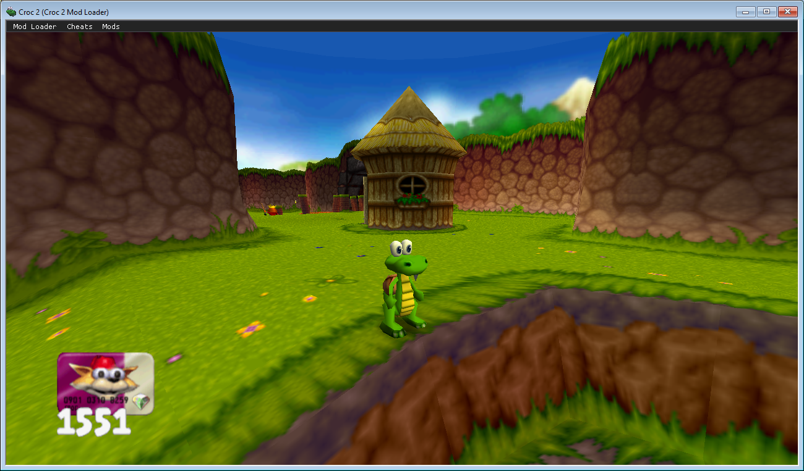
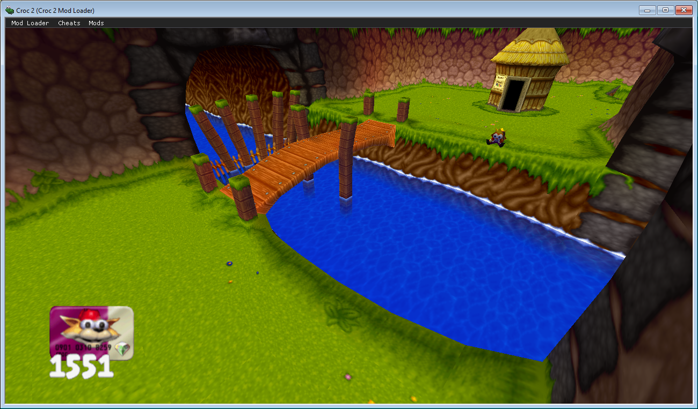
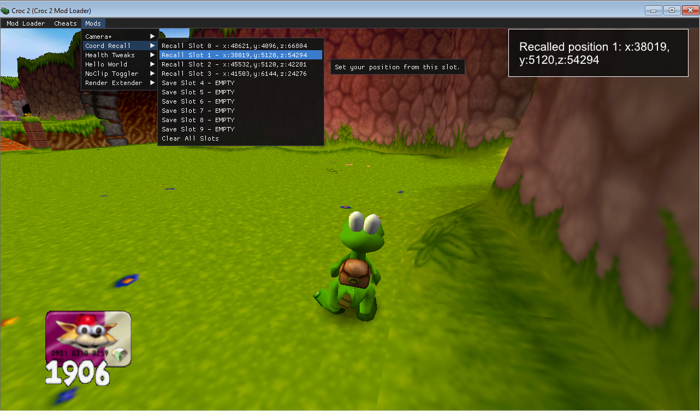
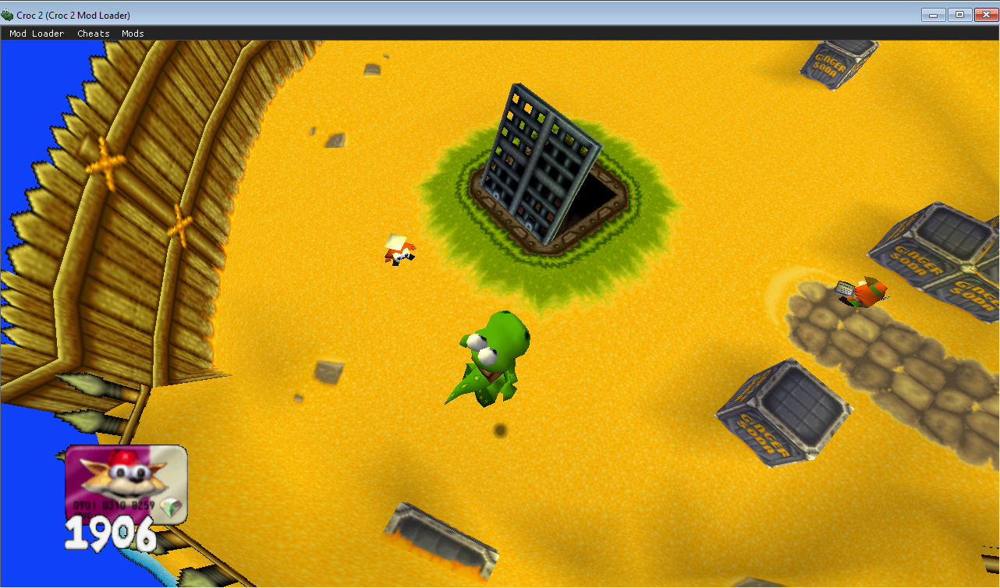
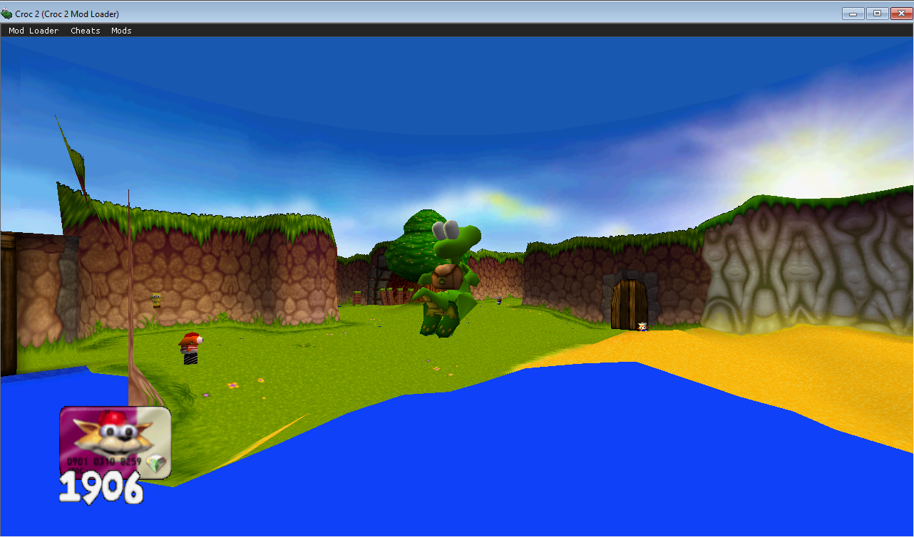
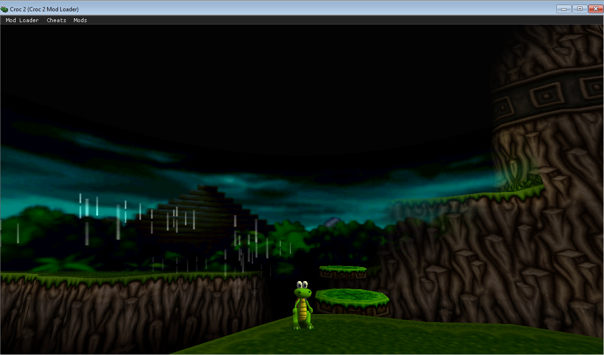
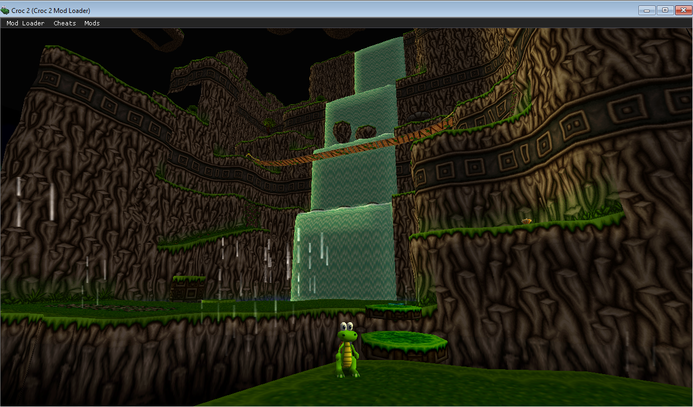

Provided Mods
Below is information about mods bundles with Croc 2 Mod Loader.
Camera+
Adds extra camera modes, such as a modern Orbit camera and a Free camera that allows you to freely look around the world!
Toggle with STEP-LEFT + STEP-RIGHT + CAMERA/180 or the dedicated menu bar options!


Coord Recall
Allows you to save and teleport to up to 10 locations! Use either via the menu bar options or the following hotkeys:
F5 + [0-9]to save[0-9]to recall

Health Tweaks
Annoyed at the game's strict health mechanics? Wish the challenge was a bit easier? You can configure the game to:
- Regain all your health on a game over
- Regain all your health when entering a level
Hello World
A dummy mod that logs a simple message. Good to test if the loader is working and not much else.
Improved Controls
Provides a couple of little improvements to the control scheme! You can configure:
- Type 1 Flip to be able to do a 180 on Type 1 controls with a double press of the camera reset button!
- Type Switch Mode to manually or automatically switch between Type 1 and 2 controls in real time!
Music Restorer
Restores missing/changed tracks from the PS1 release of the game, notably the alternative Ice Cave theme from "Save the Ice Trapped Gobbos"!
JHub34.asf and JIceCave1.asf files in the MusicRestorer/music/ folder right next to the mod .asi file!NoClip Toggler
Allows you to toggle a NoClip state, where you can freely fly and pass through walls. Toggle with STEP-LEFT + STEP-RIGHT + ATTACK or the dedicated menu bar option!


Render Extender
Allows you to increase the game's render distance greatly. Change between 1-10x render distance on the fly!
Toggle with F1 and alter with -/+ or the dedicated menu bar options!


Recommended mods
Mods not bundled with Croc 2 Mod Loader that I recommend.
Croc 2 FOV Fix
A mod that fixes your FOV at widescreen resolutions to prevent stretching. A must have for playing on modern displays. It's a standalone game mod, but you can put it in the mods/ folder to manage it with Croc 2 Mod Loader!
You can grab it here!